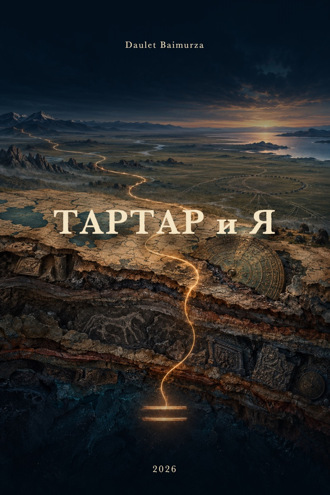

Новая книга · рабочая редакция
Тартар и Я
Авторское исследовательское эссе о памяти языка, равной мере и скрытых связях Евразии.
Даулет Баймурзин
Читать бесплатно
В выборку вошли объяснение названия, предисловие и две первые главы. Большой пролог и остальные главы остаются в полной рукописи. Эта веб-версия содержит текст и обложку.
- Почему книга называется «Тартар и Я»
- Предисловие. Не выбрать сторону, а искать след
- Глава 1. Как читать слово
- Глава 2. «Будь»
Книга строится как авторский поиск. Созвучия и широкие исторические версии в ней не равны установленным фактам; важная часть чтения — различать документ, интерпретацию и гипотезу.